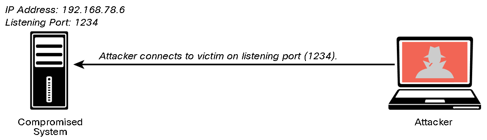

After exploit:
Creating a bind or reverse shell
Creating and manipulating scheduled jobs and tasks
Creating custom daemons and processes
Creating new users
Creating additional backdoors
Maintain persistence:
Uploading additional tools
Using local system tools
Performing ARP scans and ping sweeps
Conducting DNS and directory services enumeration
Launching brute-force attacks
Performing additional enumeration of users, groups, forests, sensitive data, and unencrypted files
Performing system manipulation using management protocols (for example, WinRM, WMI, SMB, SNMP) and compromised credentials
Executing additional exploits
For compromised systems:
Configuring port forwarding
Creating SSH tunnels or proxies to communicate to the internal network
Using a VPN to access the internal network
8.1.2 Reverse and Bind Shells
Bind Shell

Reverse Shell

Netcat:
Creating a Bind Shell Using Netcat
Connecting to the Bind Shell by Using Netcat
An Attacker Connected to a Victim Using a Bind Shell
Creating a Listener in the Attacking System to Create a Reverse Shell Using Netcat
Connecting to the Attacking System (Reverse Shell) Using Netcat
Executing Commands in the Victim’s System via a Reverse Shell
Commands:
nc -nv <IP Address> <Port>
nc -1vp <port>
nc -1vp 1234 > output.txt # Receiving system
nc -nv <IP Address> < input.txt # Sending system
nc -nv <IP Address> 80 GET / HTTP/1.1
nc -z <IP Address> <port range>
Meterpreter Commands:
cat, cd, pwd, and 1s
1pwd and 1cd
clearev
download
edit
execute
getuid
hashdump
idletime
ipconfig
migrate
ps
resource
search
shell
upload
webcam_list
webcam_snap
8.1.4 Command and Control (C2) Utilities

socat
wsc2
WMImplant
DropboxC2 (DBC2)
TrevorC2
Twittor
DNSCat2
8.1.6 Scheduled Jobs and Tasks
Windows Task Scheduler
steal data over time without raising alarms
8.1.7 Custom Daemons, Processes, and Additional Backdoors
8.1.8 New Users
8.2 Lateral Movement, Detection Avoidance, and Enumeration
8.2.2 Post-Exploitation Scanning
Remote access protocols
Microsoft’s Remote Desktop Protocol (RDP)
Apple Remote Desktop
VNC
X server forwarding
Metasploit RDP Post-Exploitation Module
8.2.3 Legitimate Utilities and Living-off-the-Land
Living-off-the-Land (fileless malware):
PowerShell for Post-Exploitation Tasks
PowerSploit and Empire
BloodHound
Windows Management Instrumentation
Sysinternals and PsExec
Windows Remote Management (WinRM)
8.2.5 Post-Exploitation Privilege Escalation
Vertical Privilege Escalation
Horizontal Privilege Escalation
8.2.7 How to Cover Your Tracks
Delete all user accounts used during the test.
Delete all files, executable binaries, scripts, and temporary files from compromised systems. A secure deletion method may be preferred. NIST Special Publication 800-88, Revision 1: “Guidelines for Media Sanitization,” provides guidance for media sanitation. This methodology should be discussed with your client and the owner of the affected systems.
Return any modified systems and their configuration to their original values and parameters.
Remove all backdoors, daemons, services, and rootkits installed.
Remove all customer data from your systems, including attacking systems and any other support systems. Typically, you should do this after creating and delivering the penetration testing report to the client.
Steganography
steghide
<END>